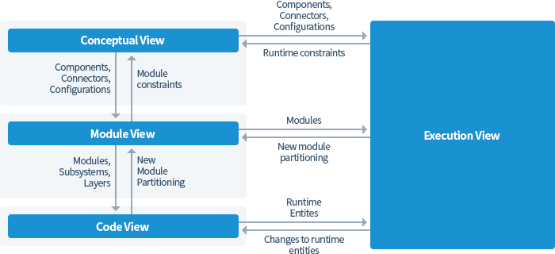
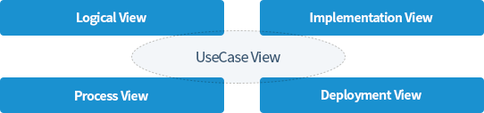
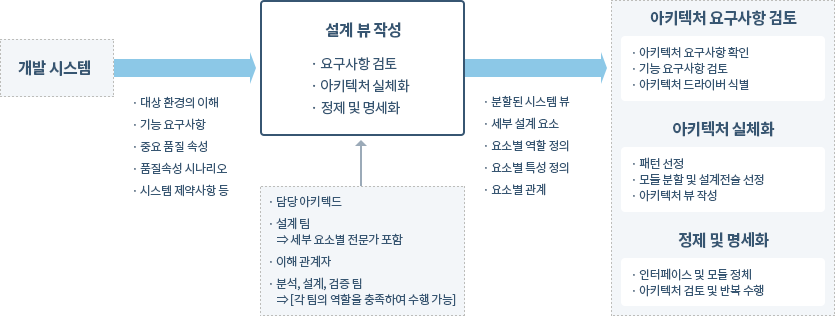
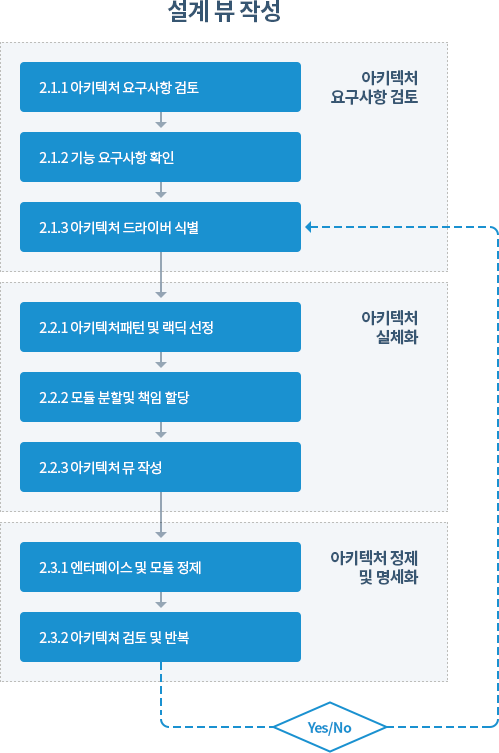

전문가들이 어떤 문제(problem)와 맞닥뜨렸을 때, 기존에 사용했던 해결책(solution)과는 완전히 다른 방법으로 그 문제에 접근하는 경우는 매우 드물다.
그들은 일반적으로 이미 해결해 본 문제의 해법 중, 당면한 문제와 가장 유사한 문제를 찾아 당시의 해결방법의 핵심을 재사용하여 문제 해결에 응용하곤 한다. 따라서 특수한 문제와
해법의 쌍을 추상화 하고 그 안에서 공통적인 요인을 추출해서 패턴을 도출한다.
이와 같은 방식의 접근법은 건축학, 경제학, 공학 등 각기 다른 여러 분야에서 공통적으로 나타난다. 여기서 '유사한 문제'란 구체적이고 세세한 사항은 다를 수 있지만, 그 해결책이
가지는 핵심적인 방법은 같은 것을 말한다.
이런 일련의 과정을 효과적으로 수행하기 위해 만든 개념이 바로 패턴(pattern)이다. 패턴에서는 빈번히 발생하는 ‘문제'와 그 문제에 대한 '해법’을 하나의 쌍으로 구성해, 특정
문제에 대한 해법을 손쉽게 재활용 할 수 있도록 하고 있다.
소프트웨어 패턴은 아래와 같은 특징을 가진다.
- 패턴은 특정한 설계 상황(context)에서 반복적으로 발생하는 설계 문제를 제기하며 그 문제에 대한 해법을 제시한다.
MVC패턴의 경우, 문제는 사용자 인터페이스가 쉽게 변할 수 있다는 것이다.
이 문제는 사용자와 컴퓨터가 상호작용해야 하는 소프트웨어를 개발할 때 흔히 대두되는데, 이런 문제를 해결하기 위해서는 책임(responsibility)을 엄밀히
구분하면 된다. 즉, 어플리케이션의 핵심 기능을 사용자 인터페이스와 분리하는 것이다.
(MVC 패턴에서는 소프트웨어의 핵심 데이터와 기능을 UI로부터 분리하는 방법을 제시)
- 패턴은 기존에 이미 그 효과가 입증된 설계 경험을 정리한 것이다.
패턴은 인위적으로 발명되거나 창조되는 것이 아니다. 경험 많은 전문가가 얻은 설계에 대한 지식을 모아, 재사용할 수 있는 형태로 정리한 것이 패턴인
것이다.
그렇기 때문에, 이미 많은 패턴을 숙지하고 있는 사람이라면, 패턴에 해당하는 문제의 해결책을 다시 찾을 필요 없이, 기존의 지식만으로도 즉각 설계에 그 해결책을
적용할 수 있다.
극소수 전문가들끼리 비밀리에 전수하는 ‘비법(秘法)’과는 달리, 패턴은 누구나 공개적으로 사용할 수 있다.
즉, 패턴은 특정 상황에서 고품질 소프트웨어를 설계할 때, 전문가 수준의 지식을 누구나 쉽게 사용할 수 있게 해준다. MVC 패턴 역시도 수년 간 상호작용
시스템을 개발하며 얻은 경험을 정리한 것이라 할 수 있다.
-
패턴은 컴포넌트나, 단일 클래스, 객체 같은 수준보다 높은 단계의 추상 레벨에서 발견되고 정의된다.
대체로 패턴은 몇몇 컴포넌트, 클래스, 객체를 서술하며 그것들의 책임, 관계(relationship), 협력(cooperation)에 대한 내용을
상세히 정의한다. 모든 컴포넌트나 클래스, 객체들은 패턴이 해결하고자 하는 문제를 함께 풀어가는데, 단일 컴포넌트로 해결하는 것보다 훨씬 효과적이다.
실제로, MVC 패턴에서는 모델, 뷰, 컨트롤러라는 세 가지 컴포넌트의 상호 협력에 대해 명시하고 있으며, 결과적으로 단일 컴포넌트로 만드는 것보다 유연하고 효과적인
시스템을 만들어내고 있다.
-
패턴은 설계 원칙에 대한 공통 어휘(vocabulary)와 공감대를 형성시켜준다. 패턴의 이름이 적절히 붙는다면, 설계 용어로 쉽게 사용할 수 있다.
패턴의 이름이 설계 용어로 사용되면, 설계에 대해 의견을 나눌 때, 그 효율성이 배가된다. 특정 문 제에 대한 해법을 설명할 때, 패턴 이름만 알고 있다면 해법의
메커니즘을 복잡하고 장황하게 설명하지 않아도 되기 때문이다. 해법의 어떤 부분들이 패턴의 어떤 컴포넌트에 해당하는지, 혹은 컴포넌트들 간의 어떤 관계가 패턴의 어느
부분과 관계 있는 것 인지만 설명하면 되는 것이다.
예를 들어, 패턴에 대해 익숙한 동료들끼리 “이 소프트웨어의 아키텍처에는 MVC 패턴을 적용합시다!” 라고 말할 경우, 동료들은 이 애플리케이션의 기본 구조와 특성들을
부연 설명
없이도 쉽게 파악할 수 있게 된다.
- 패턴은 소프트웨어 아키텍처를 문서로 정리하는 방법을 제공한다.
패턴을 사용하면 특정한 문제에 대한 마음속의 구상(vision)을 쉽게 문서로 정리할 수 있는 것이다. 이런 점은 소프트웨어를 확장할 때도 매우 유리하게
작용한다.
소프트웨어를 확장할 때, 기존의 소프트웨어가 MVC 패턴에 맞게 설계되었다는 것을 알고 있다면, 새로운 기능이 모델, 뷰, 컨트롤러 중, 어떤 컴포넌트에
해당하는 확장인지 쉽게 파악할 수 있고, 기존의 설계 원칙에 어긋나지 않게 새로운 기능을 추가 해 넣을 수 있기 때문이다. 패턴은 고유한
특성(property)을 제공해야
하는 소프트웨어를 개발할 수 있도록 도와준다.
패턴은 각 컴포넌트가 제공해야 하는 기능적인 골격을 제시하고 있다.
예를 들어 Peer-To-Peer 패턴은 프로세스간 통신에 대한 특성을 포함하고 있고, MVC 패턴은 UI의 가변성과 핵심 기능의 재사용성에 대한 특성을
포함하고 있다.
실제로 개발하고자 하는 소프트웨어가 프로세스간 통신을 필요로 한다면 Peer-To-Peer 패턴을, UI가 자주 변경된다면 MVC 패턴을 적용하거나 참고하면
보다 쉽게 소프트웨어를 설계, 개발 할 수 있다.
- 패턴은 복잡한 소프트웨어의 아키텍처를 구축하는 데 도움을 준다.
모든 패턴은 컴포넌트들과 그것들 사이의 역할 및 관계를 정의해 놓고 있다. 이런 패턴은 복잡한 설계를 위한 빌딩블록(Building-Block)으로 사용할 수
있는데, 이를 통해 이미 검증된 설계 방식을 응용하게 되어 설계에 들이는 시간은 단축하고, 그 질은 향상시킬 수 있다. 물론 많이 알려진 패턴이 항상 개발자
스스로가 고안한 해 법보다 우수한 것은 아니지만, 설계 방안을 검토할 때 충분히 참고하거나 응용할 만 한 가치가 있다. 반면, 패턴은 문제 해결을 돕는
것이지, 완전한 해법을 제공하지는 않는다.
패턴이 특정 문제에 대한 해법의 기본 구조를 결정할지라도, 해법의 세부 내용까지 모두 정의하고 있지는 않다. 패턴은 특정 문제 유형의 일반적인 해법에 대 한
스키마(scheme)만을 제공할 뿐이지, 사전에 미리 제조되어 그대로 가져다 쓰기만 하면 되는 완전한 조립식 모듈은 아닌 것이다.
그러므로 패턴을 적용하려는 개발자 는 설계의 구체적인 세부 내용은 스스로 구현해야 한다.
패턴은 아키텍처 수준의 설 계를 돕기 때문에, 패턴을 적용한 해법의 포괄적인 구조는 비슷할 수 있지만, 세부 적인 내용에서는 상당히 차이가 날 수 밖에
없다.
- 패턴을 사용하면 소프트웨어 복잡성을 관리하는 데 유용하다.
모든 패턴은 해결하고자 하는 문제의 해법을 서술한다. 이때 해법에는 필요한 컴포넌트의 종류, 각 컴포넌트의 역할, 숨겨져야 하는 세부 구현, 노출되어야 하는
추상화 부분, 그리고 이것들이 동작하는 방법 등이 서술되어야 한다. 그렇기 때문에 어떤 패턴이 다루고 있는 문제와 맞닥뜨렸을 때, 문제에 대한 해법을 찾느라
시간 들여 골몰할 필요가 없다.
패턴을 올바르게 구현하면, 그 패턴이 제공하는 해법은 자연스레 따라오는 것이다.
- 패턴 간의 관계
많은 패턴들을 자세히 살펴보면, 처음에 받은 인상과 달리 패턴 내의 컴포넌트들과 그것들의 관계가 항상 '원자적(atomic)'이지만은 않다는 것을 알 수
있다. 패턴은 특정 문제를 해결하지만 그로 인해 또 다른 문제를 발생시킬 수도 있고, 특정 패턴은 그보다 더 작은 패턴에 의해 서술될 수 있으며, 그것들을
포함하고 있는 더 큰 패턴 에 의해 통합될 수도 있다.
즉, 어떤 문제를 해결하기 위해서는 패턴 내의 컴포넌트 가 서로 밀접하게 상호작용해야 하며, 문제의 성격이나 그 문제가 발생한 상황에 따라 컴포넌트의 결합이
불가피할수도 있기 때문이다.
이것은 패턴간의 관계에서도 마찬가지다. 패턴을 통해 어떤 문제를 해결하기 위한 과정에서 또 다른 문제가 야기되기도 하고, 그 문제를 또 다른 패턴으로 해결할
수 도 있기 때문이다.
실제로도 이런 패턴들은 변형되고 일반화되어 새로운 형태의 패턴으로 발전하기도 한다.
소프트웨어 아키텍처는 내포하고 있는 구조가 너무나 복잡하기 때문에 이것을 1차 원적으로 설명하기는 매우 어렵다.
건물 설계 시에도 건물 내부의 각 방의 구조를 설명하는 설계도면 이외에도 전기배선도, 수도배관도, 채광도 등이 필요하다. 이와 마찬가지로 소프트웨어 아키텍처를 조직적으로 정의하기
위해서는 시스템의 여러 가지 측면이 고려되어야 한다.
뷰는 시스템의 여러 가지 측면을 고려하기 위한 다 양한 관점(Viewpoint)을 바탕으로 정의된다.
다음은 대표적인 뷰에 대한 소개 가이드이다.
1. Siemens Four view (Siemens사의 Soni, Nord, Hofmeister)
Christine Hofmeister는 그의 저서 “Applied Software Architecture"에서 소프트웨어 아키텍처는 4가지 뷰를 갖는다고 정의하였다.
-개념적 뷰(conceptual view), 모듈 뷰(module view), 실행 뷰(execution view), 코드 뷰(code view)-
이렇게 4가지 뷰로 정의하는 것은 소프트웨어 아키텍처를 몇 가지 뷰로 분리하는 많은 방법 중 하나이다.
시스템의 다양한 면을 각기 다른 뷰로써 정의하는 것은 시스템 복잡도의 관리를 용이하게 한다.

- 개념적 아키텍처 뷰 (Conceptual Architectural View)
개념적 아키텍처 뷰에서는 시스템의 상위레벨 컴포넌트 및 그들 간의 관계를 식별 한다.
개념적 아키텍처 뷰의 목적은 세부적인 내용까지 개발하기 전에 시스템을 적절하게 분할하는 것이다.
또한 기술 관계자가 아닌 관리나 마케팅, 사용자등과 같은 사람들에게 아키텍처를 이해할 수 있게 하는데 유용하다. 개념적 아키텍처는 기본 설계요소로써
통신 객체를 사용하고 나머지는 컴포넌트와 커넥터의 조합으로 나타낸다.
그 결과는 아키텍처 다이어그램(인터페이스에 대한 세 부사항은 생략됨)이나 각 컴포넌트에 대한 비정형적인 컴포넌트 명세서로 나타난다.
개념적 아키텍처 뷰는 어플리케이션 도메인과 매우 밀접하게 연관된다. 이 뷰에서 시스템의 기능은 아키텍처 구성요소 중 개념적 컴포넌트(conceptual
components)에 대응된다. 개념적 아키텍처 뷰에서 문제(problem)와 해결책(solution)은 특정 소프트 웨어나 하드웨어 기술과는
무관하다.
- 모듈 아키텍처 뷰(Module Architecture View)
시스템이 대규모화되고 프로그래머의 수가 많아짐에 따라 시스템의 규모에 기인하는 시스템의 복잡도를 조정하고 프로그래머사이에 작업을 분담시키기 위한 기술이
나타나게 되었다.
추상화, 캡슐화, 인터페이스 등의 개념을 지원하기 위한 기술들이 Ada 패키지나 모듈 인터-커넥션 언어 등으로 설계되었다.
시스템의 분할(decomposition)과 레이어로 모듈을 나누는 것(partitioning)은 모듈 뷰의 주요 목적이다.
개념적 뷰에서의 컴포넌트와 커넥터는 모듈 뷰에서 각각 서브시스템(subsystem)과 모듈(module)로 대응된다.
여기서 아키텍트는 개념적인 솔루션이 어떻게 현재의 소프트웨어 플랫폼과 기술들에 의해 실현될 수 있는지를 정의한다. 즉 컴포넌트 외부 적으로 나타나는
특성들은
잘 정의된 인터페이스와 컴포넌트 명세서에 의해 정확하고 명백하게 정의되며 구조적 메커니즘의 핵심은 구체화된다.
모듈 아키텍처는 컴포넌트 개발자와 컴포넌트 사용자가 서로 상호의존적으로 작업 할 수 있는지에 대한 구체적인 청사진(blueprint)을 제공한다.
구체적인 아키텍처 다이어그램(인터페이스 정의를 포함)과 컴포넌트, 인터페이스 명세서, 컴포넌트 협력 다이어그램 등을 제공한다.
- 코드 아키텍처 뷰 (Code Architecture View)
코드 아키텍처 뷰에서는 프로그램의 소스코드를 어떤 단위나 형식으로 구조화한다.
최초에 프로그램의 소스코드는 동일한 파일에 존재했었다. 그러나 오늘날 시스템의 소스 코드는 일반적으로 여러 개의 파일에 나뉘어져서 존재하며, 그 파일의
종류 또 한 다양하다. 뿐만 아니라 파일을 구성하는 절차도 매우 복잡하다.
예를 들어 객체 코드와 이진 코드는 그 자체가 산출물로서의 의미를 갖지만 이것은 반드시 라이브 러리
파일에 맵핑이 되어야 한다.
뿐만 아니라 이러한 산출물들은 여러 버전을 가 지기 때문에 형상관리가 매우 중요하다.
소스코드를 객체코드나 라이브러리, 이진파 일등으로 구조화하는 것은 코드의 재사용 및 시스템의 개발 기간에 매우 큰 영향을 미친다. 이것이 코드
뷰이다.
- 실행 아키텍처 뷰(Execution Architecture View)
실행 아키텍처는 분산 및 병렬 시스템을 위해 정의된다.
시스템의 분산될 때 프로그래머는 기능 컴포넌트들을 런타임 개체에 어떻게 할당해야 하는지, 개체들 사이의 통신과 조화, 동시성을 어떻게 조정해야 하는지,
개체들을 하드웨어에 어떻게 맵핑 해야 할지를 결정해야 한다.
실행 아키텍처 뷰는 모듈들이 런타임 플랫폼에 의해 제공되는 요소들에 어떻게 맵 핑되는지와 그들이 하드웨어 아키텍처에 어떻게 맵핑되는지를
나타낸다.
실행 뷰는 시스템의 런타임 개체(runtime entity)와 개체의 속성(메모리 사용, 하드웨어 할당 등)을 정의한다.
실행 뷰의 가장 중요한 부분은 제어의 흐름이다. 개념적 뷰는 제어의 논리적인 흐 름을 나타내는데 반해 실행 뷰에서의 런타임 플랫폼의 관점에서 제어의
흐름을 나타낸다.
2. 4+1 view : Rational Unified Process
Rational Unified Process(RUP)는 소프트웨어 개발 공정(process)으로서 개발 조직 내에서 작업과 책임을 할당하기 위한 규칙을 제시한다.
그 목적은 예정된 일정과 예산 내에서 고객의 요구를 충족시키는 고품질의 소프트웨어를 생산하는데 있다 RUP는 기본적으로 UML의 4+1 view를 기반으로 한다.
UML의 다이어그램은 클래스, 인터페이스, 노드, 종속 관계, 일반화 등과 같은 UML의 표현 양식을 그래프 형태로 표현하는 것이다. 사용자는 다양한 관점에서 시스템을
가시적으로 표현하기 위하여 다이어그램을 사용한다.
복잡한 시스템의 경우 하나의 관점에서 전체 시스템을 이해하기 어렵기 때문에 UML은 시스템의 다양한 국면에 독립적으로 초점을 맞출 수 있도록 다수의 다이어그램을
정의한다.
소프트웨어 아키텍처를 표현하기 위해서는 다음 그림과 같이 유스케이스 뷰 (UseCase View), 논리 뷰(Logical View), 프로세스 뷰(Process View),
구현 뷰 (Implementation View), 배치 뷰(Deployment View)등과 같은 다섯 가지의 상호보완 적인 뷰를 사용한다. 이들 각각의 뷰는 구조
모델링(정적 모델링)과 행위 모델링 (동적 모델링)을 포함한다.

- 유스케이스 뷰
유스케이스 뷰는 외부 액터가 인식하는 시스템의 기능성을 설명한다.
유스케이스 뷰는 사용자, 설계자, 개발자 및 테스터를 위한 것이다.
유스케이스 뷰는 주로 유스 케이스 다이어그램(UseCase Diagram)으로 표현되지만, 간혹 활동 다이어그램 (Activity Diagram)으로
표현되기도 한다.
사용자가 원하는 시스템의 용도는 유스케 이스 뷰에서 다수의 유스케이스로 설명된다.
유스케이스 뷰는 다른 뷰의 개발을 유 도하기 때문에 매우 중요하다. 시스템의 궁극적인 목적은 유스 케이스 뷰에 설명된 기능성을 제공하는 것이다.
또한 유스 케이스 뷰는 시스템을 검증하고 확인하는 데 에도 사용된다.
- 논리 뷰
논리 뷰는 시스템의 기능성이 어떻게 제공되는지를 설명한다. 논리 뷰는 주로 설계 자와 개발자를 위한 것이다.
유스케이스 뷰와는 달리 논리 뷰는 시스템의 내부를 들여다본다.
논리 뷰는 클래스, 객체, 관계 등과 같은 정적인 구조와 객체가 다른 객체 에게 메시지를 전달할 때 발생하는 동적인 협동을 설명한다.
정적인 구조는 클래스 다이어그램(Class Diagram)과 객체 다이어그램(Object Diagram)에 표현되며, 동적인 모델링은 상태 다이어그램(
Statechart Diagram), 순차 다이어그램(Sequence Diagram), 협동 다이어그램(Collaboration Diagram) 및
활동 다이어그램에 표현된다.
- 프로세스 뷰
프로세스와 프로세서로 구분되는 시스템의 분할을 설명한다.
이러한 사항은 시스템 의 비기능적인 속성을 다루는 것으로서 자원의 효율적인 사용, 병행 실행 및 비동기 이벤트의 처리 등을 허용한다.
또한 프로세스 뷰는 병행 실행되는 쓰레드간의 통신 과 동기화를 다룬다. 프로세스 뷰는 개발자와 시스템 통합자를 위한 것으로 상태 다
이어그램, 순차 다이어그램, 협동 다이어그램, 활동 다이어그램과 같은 동적인 다이 어그램과 컴포넌트 다이어그램(Component Diagram)과 배치
다이어그램 (Deployment Diagram)과 같은 구현 다이어그램으로 구성된다.
- 구현 뷰
구현 모듈과의 의존성을 표현한다.
서로 다른 코드 모듈을 구성하는 컴포넌트는 그 구조와 의존성을 보여주고 컴포넌트에 관한 부가적인 정보를 정의한다.
- 배치 뷰
배치 뷰는 물리적 시스템의 노드에 해당하는 실행 시스템에 물리적 컴포넌트를 맵핑 하는 것을 나타낸다.
배치 뷰는 개발자, 시스템 통합자 및 테스터를 위한 것으로써 배치 다이어그램으로 표현된다.
배치 뷰는 컴포넌트가 물리적인 아키텍처에 어떻게
배치되는가를 보여주는 맵핑을 포함하여야 한다.
3. Architectural Structure
본 지침에서는 위에 살펴본 3가지의 뷰 스타일 중 SEI(Architectural Structure)의 구성을 사용하고자 한다.
자세한 내용은 다음 절에서 자세히 설명한다.
- Module Structure(View)
모듈은 시스템의 주요한 구현 단위(implementation unit)이며, 각 모듈들은 기능적 책임을 갖는다.
- 분할(Decomposition) : 하나의 모듈이 보다 작은 모듈들로 분해된다.
- 사용(Uses) : 사용구조의 unit들은 서로 uses 관계로써 연관되며, 사용 구조는 기능 추가를 위해 쉽게 확장이 가능한 공학 시스템에 사용된다.
사용구조의 시
스템은 증분적(incremental) 개발이 용이하다.
- 레이어(Layered) : 레이어는 관련 기능성의 coherent한 집합이다. 이 경우 Layer n은 Layer n-1의 서비스만을 사용(use)할
수 있다.
- 클래스(Class) 또는 일반화(Generalization): 일반화 구조에서의 모듈 유닛을 클래스라 지칭한다. 이 구조는 유사한 행위나 능력의 집합에
관한 이론을
지원한다.
- Component and Connector Structure(View)
런타임 컴포넌트와 커넥터로 시스템의 실행단위를 기술한다.
- Pipe-and-Filter: 데이터 스트림을 연속적으로 변환한다.
- 공유 데이터(Shared Data, or repository): 이 구조는 영구적인 데이터를 생성, 저장, 접근하는 컴포넌트와 커넥터로 구성된다.
- 발행 구독(Publish-Subscribe): 이벤트의 공표를 통하여 컴포넌트들이 상호작용 한다.
- Client-Server : 이 구조에서는 클라이언트와 서버가 컴포넌트이며, 프로토콜과 메시지가 커넥터가 된다.
- Peer-to-Peer: 컴포넌트들이 동등한 입장에서 서비스를 교환하며 상호작용한다.
- 프로세스 통신(Communicating processes): 모든 C&C구조와 마찬가지로, 이 구조도 모듈 기반 구조와 orthogonal하며
구동(running)
시스템의 동적인 면을 다룬다. 이 구조에서는 프로세스나 쓰레드가 구성 유닛이 된다.
- Allocation Structure(View)
시스템의 소프트웨어 구성요소와 소프트웨어가 생성되고 실행되는 외부 환경사이의 관계를 기술한다.
- 배치(Deployment) : 배치 구조는 소프트웨어가 하드웨어와 통신 요소에 할당되는 내용을 나타낸다. 이 구조의 요소는 소프트웨어(주로 C&C
뷰에서의 프로세스), 하드웨어(프로세서), 통신 경로 등이다.
- 구현(Implementation) : 이 구조는 소프트웨어 요소(주로 모듈)와 시스템 개발, 통합, 형상관리 환경에서 파일 구조와의 맵핑 관계를
나타낸다.
- 작업 할당(Work assignment): 이 구조는 모듈의 구현 및 통합에 대한 책임을 적절한 개발 팀에 할당한다. 위에서 설명한 소프트웨어 아키텍처
뷰는 관련된 아키텍처의 유형에 따라 다음과 같이 분류될 수 있다.
| SEI |
RUP 4+1 view |
Slemens's 4 view |
| Module view |
Logical view
Development(Implementation) view |
Modual view |
| Component-and-connector view |
Process view |
Conceptual view
Execution view |
| Allocation view |
Physical(Deployment) view |
Code view Execution view |
4. 아키텍처 뷰 타입 가이드
본 지침에서는 뷰 스타일 중 SEI(Architectural Structure)의 구성을 사용한다. 아래의 내용은 보다 자세한 예제이다.
- Module View-types
- Decomposition
- Uses
- Generalization
- Layered
- Component View-types
- Pipe-and-Filter
- Shared-Data
- Publish-Subscribe
- Client-Server
- Peer-to-Peer
- Communicating-Processes
- Deployment View-types
- Deployment
- Implementation
- Work Assignment
| 모듈 뷰의 구성 |
내용 |
요소
(Element) |
모듈 : 명확한 기능을 제공하기 위한 책임을 갖는 소프트웨어의 구현 단위. |
관계
(Relations) |
- is-part-of : part/whole relationship.
- depends-on : dependency relationship.
- is-a : generalization relationship.
|
요소의 속성
(Properties of elements) |
모듈의 속성은 다음과 같다.
- 이름
- 책임(Responsibility)
- 구현 정보(Implementation information) : 모듈을 구현하기 위한 코드 유닛의 집합.
|
관계의 속성
(Properties of elements) |
관계의 속성은 다음과 같다.
- is-part-of 관계 : 가시성(visibility)
- depends-on 관계 : 제약조건(constraints)
- is-a 관계 : 구현 속성
|
| 제약조건 |
모듈 뷰는 고유의 위상적인(topologocal) 제약조건을 갖지 않는다. |
아키텍처에 반영하고, 도출된 품질속성을 기반으로 하여 소프트웨어 아키텍처를 정의하 고자 하는 활동이다.
품질속성을 만족시키는 아키텍처 패턴과 설계 전술을 적용하면 서 시스템 혹은 시스템 요소를 분해하는 재귀적인 프로세스를 따른다. 본 지침에서 제안하는 설계 뷰 작성 방법은
CMU SEI의 속성주도 설계 방법론을 참고하여 작성되었다. 설계 뷰를 작성하는 활동은 요구사항 분석활동에서 정의 및 산출되었던 산출물과 추가로 작성되거나 보충되는 자료를 입력으로
하여 분할되어 구성된 시스템 요소들 과 품질속성을 만족하는 아키텍처 패턴 및 설계전술이 적용된 아키텍처 설계 뷰를 산출물로 정의한다.
설계 뷰 작성 활동은 앞에서 수행한 요구사항 분석 활동과 이후 에 수행할 검증활동과 밀접하게 연관되어 수행하게 된다. 분석에서 제시된 품질속성을
기반으로 시스템을 분할하여 아키텍처를 설계하고, 이렇게 설계된 결과물을 기반 으로 아키텍처 검증 활동에서 사용하게 된다.
- 설계 뷰 작성 과정 절차
설계 뷰 작성 활동을 도식화하여 조금 더 자세히 살펴보면 아래와 같다.

입력물로 사용되는 자료나 문서들은 명확하게 기술되어 있어야 하며, 요구사항 분 석 과정을 따라서 명확히 작성 되어진 산출물을 충분히 참고하여 설계 과정을 진행 하도록
한다.
-
설계 뷰 작성 수행절차 요약 설계 뷰 작성 과정에서는 요구사항 분석 과정에서 도출된 산출물을 검토하여 아키 텍처 결정사항에 중요한 영향을 미치는 아키텍처 드라이버를
식별하고, 품질속성 요구사항을 만족시킬 수 있게 시스템을 패턴과 설계전술을 활용하여 분할하고 이를 아키텍처 뷰로 표현하여 실체를 가지는 아키텍처로 만든다.
만들어진 아키텍처의 인 터페이스와 모듈 정제를 통하여 정제하고 명세화한다. 아키텍처 결정사항에 따른 트 레이드오프가 성공적으로 수행 되었는지 검토하고 더욱 하위의
모듈 혹은
컴포넌트 로 분할시킬 필요성이 있으면 위의 절차를 반복하여 수행한다. 활동의 수행은 주로 팀 단위로 진행하게 되며, 특정한 활동의 경우 모든 이해관계자의 참석을
요구하게
된다.

- 입력물/산출물 요약
요구사항 분석과정의 산출물과 추가된 자료를 입력물로 받아 설계 뷰 작성 과정을 수행한다. 아래는 입력물의 예시이다.
- 개발 대상 시스템의 비즈니스 환경
- 개발 환경 및 기술 환경
- 비즈니스 품질 목표
- 중요 기능 요구사항
- 시스템 제약사항
- 기능 요구사항
- 핵심 품질속성
- 품질속성 시나리오
- 기타 관련 문서
요구사항 분석 절차를 수행하고 나면 아래와 같은 산출물이 작성된다.
- 아키텍처 드라이버
- 후보 아키텍처 패턴
- 후보 아키텍처 설계전술
- 아키텍처 결정사항
- 다양한 관점의 아키텍처 뷰
- 문서화된 아키텍처 구성 요소